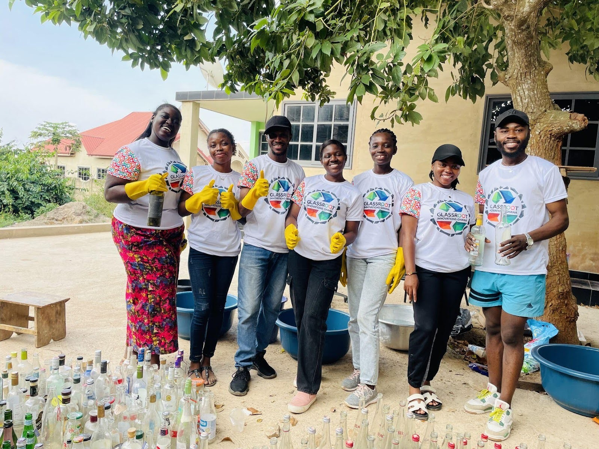

Beyond the Science (BTS) has provided targeted technical and capacity support to climate activists participating in the Climate and Development Knowledge Network (CDKN) Climate Activists Programme, strengthening youth-led community projects across Ghana.
The support responded to a recurring challenge faced by many climate activists: while passion and commitment are strong, practical skills in project design, monitoring, communication, and sustainability are often limited. BTS worked closely with activists to bridge this gap through structured workshops and tailored technical clinics.
Sessions focused on developing clear theories of change, defining measurable outcomes, and aligning community projects with local adaptation priorities. Activists working on waste management, climate education, water security, and ecosystem restoration benefited from hands-on guidance.

BTS also emphasised storytelling and communication as core components of effective climate action. Activists were supported to articulate the social and environmental value of their work to community stakeholders, policymakers, and potential funders.
Several participants reported increased confidence in managing their initiatives and engaging partners. Some supported projects progressed to implementation or partnership development following the technical support. The collaboration reflects BTS’s commitment to strengthening locally-led climate action by investing not only in ideas, but in the systems and skills required for long-term impact.